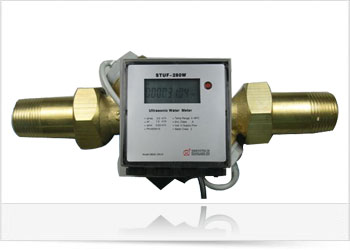
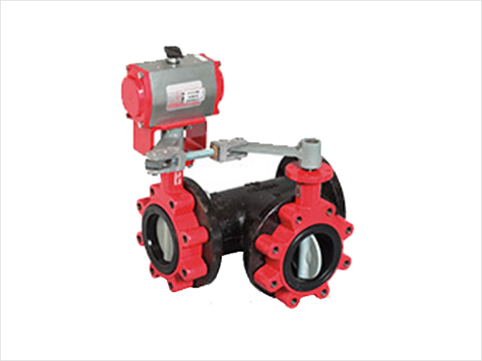
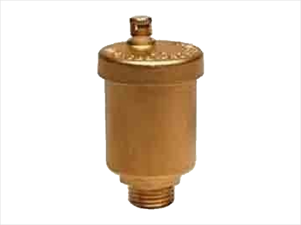

Flow Meter

Ultrasonic flow measurement is among the best & most accurate technology available these days. It is widely accepted &
prominently used across the industries due to its non-cohesive nature with the flow media. It is also non-effected in
high magnetic field zones, where other technologies like electromagnetic & Boltzmann’s turbine technologies might have a
challenge.
Our Shenitech ultrasonic flow meters work on Transit time principle which ensures high accuracy. Our ultrasonic flow
meters are used not only for domestic
water application but also in dirty water having high TDS, in Sewerage treatment & effluent treatment application.
Transit time principle is annotated as below.
“ It is the time difference taken by two UH frequency pulses to reach the diametrically opposite ends of the pipe, which
is related to the velocity of the fluid media inside pipe in direct proportion ”
Suppose ‘T1’ is the time taken by pulse to travel downstream to the flow of media & ‘T2’ is the time take by the pulse
to travel upstream of the flow media moving unidirectional with velocity ‘v’ , then time difference ‘δT’ is related to
velocity as
(T2 – T1) = δT Or δT α v Or δT = k * v Or δT/k = v
Cross section area of pipe is ‘A’
Then Flow rate ‘Q’ can be calculated as
Q=v*A
We can offer inline type as well as clamp-on and insertion type sensors, depending upon the applications’ requirement. Our flow meters offer all standard signal outputs like analog outputs (4- 20 mA or 0-10 VDC), Modbus over RS-485, M-Bus etc. which is widely accepted for third party integration.Benefits & Features:
- Low maintenance as no moving parts
- High Accuracy as high as ± 1%
- OIML R49 standard. CE Approval
- Low pressure drop
- Tamper Proof Design
- Low Cost Over long run
- We have all types of sensors option available as far as mounting is considered. The sensor selection is generally depend upon the application & site conditions. We recommend to take our expert advice before making selection of appropriate sensor.
.jpg)
Clamp-on Flow meter
- Non-intrusive. No risk of contamination or leakage
- Easy installation. No pipe cutting, no hole drilling. Save installation cost
- Can be easily moved from one location to another
- For pipe size DN25 ~ DN6,000 (1”~240”)
Insertion Flow meter
- Excellent long-term stability
- Better accuracy than clamp-on
- Better signal strength, thus, better performance than clamp-on when liquid has some solids
- For pipe size ≥DN80 (3”)
Inline Flow meter
- Excellent long-term stability
- Best accuracy among the three transducer types
- Flowmeter is pre-programmed in factory, thus, it is a simple plug and play device
- For pipe size DN10~DN500 (3/8”~20”)
BTU Meter
Clamp-on Ultrasonic BTU Meters
 The STUF 300R ultrasonic thermal energy meter provides abundant capabilities for accurate thermal energy measurement of
a liquid-based thermal energy production / transferring system. It is the 3rd generation energy meter from Shenitech.
Compared to its predecessors, the 3rd generation offers better performance and a richer feature set, all at a lower
price.
The STUF 300R ultrasonic thermal energy meter provides abundant capabilities for accurate thermal energy measurement of
a liquid-based thermal energy production / transferring system. It is the 3rd generation energy meter from Shenitech.
Compared to its predecessors, the 3rd generation offers better performance and a richer feature set, all at a lower
price.
The STUF 300R system is consisted of a high performance ultrasonic flowmeter EF10 and a pair of standard PT100 temperature sensors. The ultrasonic flowmeter is based on our cutting-edge clamp-on flow measurement technology, which is capable of measuring the flow from outside of a pipe accurately and reliably. Due to the non-intrusive nature of this technology, there is no pipe cutting, no moving parts, no pressure drop, no leaks and no risk of contamination. Besides, the installation is simple and requires no special skills or tools.
The two PT100 sensors, which could be either insertion type or surface-mounting type, are used to measure the temperature of the supply flow and the return flow. The energy consumption rate is then calculated based on the temperature difference and the measured flowrate. A built-in energy totalizer is used to accumulate the amount of energy delivered.
STUF 300R provides versatile input/output interfaces, such as isolated digital outputs, relay output, batch control, alarm, 4-20mA output. In addition, the built-in isolated RS-485 port with surge protection and MODBUS support makes remote energy monitoring and energy meter networking easy and reliable. Other output modules, such as BACnet module, Ethernet module, GSM/GPRS wireless module, RF module and more, can be added to the standard package.
STUF 300R is an ideal choice for improving HVAC, energy production and building energy efficiency in terms of heating, cooling ventilation and air-conditioning.
Advantages:
- Non-intrusive thermal energy/BTU measurement
- Easy and economical installation; no pipe work required
- No moving parts to wear and tear; no maintenance required
- Industrial grade temperature sensors and ultrasonic sensors for improved robustness
- Paired PT100 RTD sensors and ultrasonic transducers for improved accuracy
- Suitable for pure liquids and liquids with some particles; no dependency on conductivity
- Suitable for all commonly used pipes
- Bi-directional flowmeasurement
- Seamless integration of temperature and flow so as to deliver a complete energy metering solution
- High-performance; abundant input/output features, such as 4-20mA, relay, alarm, task scheduler, batch controller and more
- Totalizers for flow, energy, daily energy and monthly energy
- Large data logger for recording multiple variables (optional)
- Communication: RS485/MODBUS. Optional GPRS, GSM, RF wireless
- Compatible with the uGalaxy telemetry system for centralized energy distribution management
Conclusions:
The entire installation and system tuning was completed within two days time, therefore a quick andeconomical installation. This is only possible with non-intrusive clamp-on ultrasonic technology. The fact that the size of the pipe was as large as 24 , one can only imagine how expensive and labor intensive it would have been to use another type of technology, i.e., mechanical flowmeter or magnetic flowmeter. STUF 300R BTU meter resulted with saving the customer major installation costs and quickly delivered most favorable results.
In summary, the benefits of the Shenitech Metering STUF 300R energy metering system include:
Non-intrusive installation thereby significantly saving money and time, in particular for large size pipes No moving parts, thus, almost no maintenance, thereby savingmaintenance costs Accurate flow and BTU measurement improves chiller plant control Real-time data and balancing information to improve system efficiency Continuous monitoring of flow, temperature, and energy transportation guarantees system performance along with providing alarm for potential risk or energy leakage
Equipment: Shenitech Metering Clamp-on Wall-mount Ultrasonic Thermal Energy Meter, STUF 300R-C.
Inline Ultrasonic BTU Meters
BTU meters are used on chiller lines to measure the energy consumed by the chillers in the cooling process. Our BTU meters are constantly used in projects and recommended by various consultants and BMS providers across the country. Shenitech ST-280T BTU meters are based on Ultrasonic Transit Time Technology. These BTU meters assure Class-2 accuracy and have a tamper-proof model as per the energy norms in various countries.These BTU meters have an in-built battery i.e. no hassles of power supply on the site. Battery back-up lasts for 6 years. Since there is no moving part in the sensor assembly these meters are maintenance free and hence has high reliability.
Unmatched Advatages of Shenitech BTU meters
- We have an entire range of ultrasonic flowmeter from 15mm to Line sizes more than 700mm and customized for higher line sizes as per your requirements.
- Our meters can detect a very high capacity of flow. Because of the high flow capacity, we need a lower size meter for a certain flow rate. - For example: 100mm line size might require our 65mm flow meter.
- This enables cost saving and also proper sizing of the meter.
- All our meters are wet calibrated where the temperature and flow sensor are calibrated together and we give a calibration certificate with each and every meter.
- All our meters have an inbuilt battery backup – guaranteed for a minimum of 6 years.Hence no hassels of giving rthe power supply and spending unnecessary cabling and cable laying cost.
- No reflector used for detection of flow. This ensure that meters are very robust and don’t have any problems even after years of operation. This ensures efficiency of meter and maintenance free years of operation.
- Single point source for meters, hardware for interconnectivity (M-Bus) and software for billing and meter reading. This ensures zero dependence on a third party. Also we ensure that the system is up and running at all times.
- Tamper proof design---ensures no tampering in the final bill 2 years international warranty on all the products
Model : 280T
Variable Air Volume Boxes (VAV Boxes)
Variable Air Volume (VAV) Boxes are required to control air supply as per the requirement in an air distribution network
of air flow in a particular zone. VAV Boxes are used very frequently in office space, commercial towers, conference
rooms & control area to control temperature & try to achieve a particular set point given to its thermostat.
VAV Boxes by varying airflow can control various parameters like temperature, CO2 level, positive differential pressure,
depending upon its application. It also attains substantial energy saving by blocking access air into the duct & hence
in-turn low rpms of AHU fans, unlike constant air volume system which is not capable of achieving high energy
efficiency.
NinthWave is associated with Honeywell Automation to bring out the best quality Variable Air Volume system to its
customers. WE became proud ‘exclusive channel partners for VAV system’ of Honeywell Automation for complete country in
year 2014.
We provide Pressure Independent type Variable air volume boxes, factory fitted with a microprocessor DDC controller,
damper, damper actuator, cross flow velocity sensor with differential pressure transmitter, thermostat and in-built step
down transformer. VAV boxes are calibrated in factory & undergo Honeywell’s stringent quality check tests before being
shipped out of factory.
We can also customize VAV boxes as per the requirement of customer like, single skinned, double skinned, by-pass, multi
leaf, with heating element etc.
 VAV controller comes with BACNet® MS/TP communication standard, which
is widely accepted for third party integration across the country. We also provide tested integrators for VAV
integration.
VAV controller comes with BACNet® MS/TP communication standard, which
is widely accepted for third party integration across the country. We also provide tested integrators for VAV
integration.
In past years we have successfully commissioned VAV system at so many prestigious multi-national client offices across
the country, catering to their customized requirements.
Applications successfully commissioned are briefed below.
Zone Temperature Application
This is the most common type of application, required to control temperature by varying air flow. The most critical of
them were heating & cooling application, where air temperature changes as per the weather condition, & hence VAV
operation also reversed to achieve a set point. Our technical team has mastered these applications to ensure proper
operation of the system.
Fresh Air/ Ventilation (Demand Control Ventilation) Application
In Demand Control Ventilation, a VAV operates to limit & measure the air flow required to maintain a CO2 differential
level in a particular zone. A high CO2 level can cause lower work efficiency of the work force. Also access fresh air
intake in an AHU can decrease its energy efficiency. In order to control an optimum level of CO2 differential level, a
Variable Air Volume Box finds its application, it measures CO2 level & modulate accordingly to maintain a CO2 level
inside a work space. We have commissioned systems having such requirement across the country successfully.
Our controllers are fully compatible to maintain VOC level, rH level etc. to provide a controlled environment.
Differential Pressure Application
We have also come across differential pressure application, where a VAV is placed in return duct, & it allows
maintaining a higher pressure in the controlled area. This application is generally used in controlled environment like
clean room, drug formulation chambers, storage cabins, Server rooms etc. Applying VAV system, an efficient dust free
system can be provided by maintaining a positive pressure inside the zone.
We have undertaken these critical application & successfully commissioned them.
VAV Box CFM Range: We offer an extensive range of CFMs from 62 cfm to 8000 cfm
| Unit Sizes | I/s Min-Max | CFM Min-Max |
|---|---|---|
| 6 | 29 - 212 | 62 - 450 |
| 8 | 52 - 378 | 110 - 800 |
| 10 | 85 - 637 | 180 – 1350 |
| 12 | 127 - 991 | 270 – 2100 |
| 14 | 189 - 1510 | 400 – 3200 |
| 16 | 269 - 1888 | 570 – 4000 |
| 24x16 | 1416 - 3775 | 3000 – 8000 |
Control Valves & Actuators
FCU Valves
High pressure zone valves used to control the flow of hot or chilled water in unitary equipment

- Used in conjunction with VU Fan Coil Actuators
- Maximum static water pressure: 300 psig
- Ambient temp range 34 - 104°F
- Patented ball seal provides long service life, soft close-off
- No cartridges
- 3-Way are mixing only
- Quick opening/soft closing for optimal 2-position control
- Compact construction for easy installation
- Fits under the cover of most baseboards
- Convectors with actuator fitted to body
Ball Valves and Valve Actuators
Cover every application with one control valve brand

- VBN/VBF Control ball valves control hot and chilled water in HVAC systems to provide two-position, floating, or modulating functions.
- Order them with or without factory-mounted non-spring return or spring return direct-coupled actuators.
- Flanged control ball valve offering available (VBF)
- Accurate flow control
- Simplified actuator selection with a large range of Cvs
- Built for safety and endurance with a blowout-proof stem to withstand high pressure and optional NEMA 3R enclosure for weatherproofing
- Field replaceable stem allows valve to be serviced and replaced on the pipe
- Threaded 2-Way models up to 3" and 3-Way models up to 2-1/2"
- Parabolic flow insert constructed into the ball provides high quality seals and precise control
- Multi-actuator mounting bracket allows the same bracket to be utilized on all valves
- Removable manual operating handle to control valve during installation or in an event of power failure
| Feature | Function | Benifit |
|---|---|---|
| Universal Mounting plate | Accommodates different actuator sizes. | Allows use of any sized OpenAir actuator on same valve body with no additional linkage |
| Flow optimizer | Generates equal percentage flow characteristic for proper water coil application | Provides linear heating response from control coil – aids in proper loop control |
| Actuator mounting standoff and thermally isolated bracket | Provides a thermal barrier between actuator and valve | Allows actuator to be used in higher temperature applications |
| Manual override handle | Enables hand operation of valve | Allows operator to manually operate valve in event of a power failure |
| Higher close-off | 200 psi close-off for all line sizes | Less worry about close-off pressures; matches or exceeds competitors’ close-off pressure |
| Expanded Cv offering | Provides more options for perfect matching of valve with control loop | Better sizing of valves to the job requirements |
| Full port models available at each line size | Perfect for on/off applications | Allows use of a consistent product line through all applications |
| Stainless steel or chrome plated ball | Provides performance and cost choices | Able to meet stainless steel specifications where required, while offering cost effective chrome plated option across entire product line |
| GQD spring return actuators for ½ and ¾ inch valves | Lower torque, lower priced actuator for small valves | Competitive performance and pricing |
| Utilizes OpenAir Series of direct-coupled actuators | Provides quarter-turn (90°) rotation of valve stem and ball | Proven actuation for precision control of ball valves |
| Double O-ring blow-out proof stem seal | Provides redundant leakage protection and positively protects against blow-out | Ensures long life and consistent performance in the most demanding environments |
| Actuator may be indexed into four positions | Actuator may be mounted to valve in 90° increments | Provides flexibility in installation to adapt to space constraints |
Motorised Butterfly Valves
Large capacity. Small Dimensions.
 ⍟ Offer two-position or modulating control of chilled and hot water, cooling tower systems, and thermal storage systems
⍟ Pipe sizes from 2 - 20" for both 2-Way and 3-Way applications
⍟ Floating, modulating, 2-position direct coupled actuators and industrial-grade electric actuators; high and low pressure spring and non-spring return pneumatic actuators
⍟ Lug body
⍟ Manual shut-off valves for end-of-line service
⍟ Corrosion resistant coating Heavy duty, corrosion-resistant top bushing, located in the upper journal, absorbs actuator side thrust
⍟ Each valve is factory tested to 110% of specified pressure rating
| Feature | Function | Benefit |
|---|---|---|
| Molded-in resilient seat | Molded-in resilient seat | Reduces energy costs associated with media leakage |
| Lugged body | Drilled and tapped two-sided connection | Allows isolation and removal of downstream piping while system is pressurized |
| Round polished disc | Provides 360° concentric seating, minimum flow restriction, lower torque requirement, and longer seat life | @- Enables superior close off, while decreasing energy losses - Lower torque requirements allow use of lower cost actuators - Provides years of trouble-free service |
| Upper and lower inboard bronze bearings | Precisely aligns disk and reduces friction | Requires lower torque and maintains precise alignment for positive close off |
| Thru-stem design | High strength and positive disk control, as well as standardized end connection | Increases control and allows for various actuator configurations |
| Extended neck | Provides additional clearance | Allows full insulation of piping and maintains clearance for flanges |
| Heavy duty corrosion resistant top bushing | Supports stem against side loads | Superior control and long life |
Globe Valves and Valve Actuators
Provde the rangeability and close-off needed to keep tight control of the environment
⍟ Available in threaded (1/2" - 3") or flanged (2-1/2" - 6")
⍟ 2-Way and 3-Way
⍟ Equal percentage flow
⍟ Stainless steel stem and trim
⍟ 2-position or precision modulating control of hot and chilled water or steam
⍟ Accurate positioning with equal percentage and linear flow characteristics to ensure state-of-the-art temperature control
| Featuure | Function | Benefit |
|---|---|---|
| Forged Brass valve body | Higher pressures in the forging process align the grains of metal | Smoother, not as heavy as cast Bronze valves for same ANSI 250 pressure class rating |
| Standard actuator connection | Only hand tightening requiredEliminates separate actuator-to-valve linkage | - No tools required to install - Fewer parts to order, install, and maintain - Simpler product selection - Easy Pneumatic to Electronic interchangeReduces installation time |
| Standard stroke-5.5 mm | Precise balance of stroke vs. performance | Allows high performance flow control with minimal product size |
| Spring range built-in to valve (1/2” to 1” line sizes only) for pneumatic actuator | Allows single part number for actuator | Reduces selection complexity and inventory for service parts |
| 2-way (Normally Open/Normally Closed) and 3-way (Mixing) | Valves available for all applications | Allows consistent use of product throughout a system |
| Choice of Brass (25 psi) or Stainless (50 psi) trim | Provides a range of performance and cost | Single product family may be used in demanding performance situations and also be cost competitive in lower stress environments |
| ½” to 1” line size, 0.40 to 25 Cv | Large range of end connection options | Minimizes the need for reducers and ancillary pipe fittings |
| Meet ANSI/FCI 70.2 Standard Class IV valve seat leakage specification | Valve seat leakage is less than 0.01% of Cv at rated close-off pressure | Tight shut-off of controlled device eliminates overheating/cooling and reduces energy consumption |
| Parabolic control plugs | Provides accurate flow control curves at an affordable price point | Best price/performance combination |
| Double O-ring packing construction | Single packing for water applications 32°F to 250°F, 15 psig steam | One valve to stock |
| No-service stem packing | Long-life packing, lubricated for life of valve | Minimize service time – valve is disposable at end of service life |
| Choice of end connections | Union fitting options allow easy service replacement of worn valve assemblies | - Basic FxF NPT valve is price competitive with all industry valves - Fitting options allow for easy access to valve components by quickly removing valve from line |
Pressure Independent Control Valves (PICV)
Deliver high efficiency in less time


⍟ Pressure independent control valves balance the system at every point over the range of the control valve within 5% accuracy
⍟ Control flow exactly at all load conditions, not just at design conditions
⍟ Improved control and performance helps extend actuator life expectancy
⍟ High Turn-Down Ratio/Equal Percentage Flow results in linear heat transfer for optimal control. The characterized insert is integral to the ball, resulting in longer service life and higher differential pressure capabilities.
⍟ Less torque is needed, so you can use lower-cost, low-torque actuators on larger pipe sizes No Cv calculation required - just pick the valve that matches the flow requirements - Flow range of 1 to 95 gpm
⍟ Field serviceable stem allows valve to be serviced in the field rather than cut from the pipe
⍟ Optional test ports facilitate system set-up for balancing report
⍟ Manual override to control valve during installation or in the event of power failure
⍟ Full range of sizes from 1/2" to 6"
⍟ 5-year actuator warranty
| Feature | functions | Benefits |
|---|---|---|
| Pressure independent sizing | - Eliminates need for calculating Cv using flow and pressure drop. | - Simplified valve sizing. |
| Adjustable flow limiter | - Analog scale provides flexible adjustment of maximum flow allowed through the device. - Eliminates over-supply. - Locking nut prevents accidental changes to maximum flow setting. |
- Energy cost savingsOptimized performance. - Simplified balancing for fast and trouble free commissioning. - Commissioning cost savings. |
| Mechanism for maximum flow setting is independent of valve stroke | - Always maintains full stroke of valve. | - Greater control resolution and precision - Excellent control accuracy. | Stroke valve design | - Uses standard Siemens SS Series, SQS, SAX, and new SQV globe valve actuators. - Eliminates deadband associated with ball valve actuators at beginning and end of stroke. | - Common actuator wiring simplifies installation. - Greater control over the whole stroke of the valve and actuator. |
| Automatic pressure regulator | - Automatic balancing and pressure independent - Maintains constant flow through the valve at any given control setting regardless of the pressure fluctuations in the system. - Always maintain maximum valve authority. - Avoid over- and under-flow. |
- Energy cost savings
- Easier balancing and shorter commissioning times. - Commissioning cost savings. - Eliminate “hunting”, increased actuator life due to fewer repositions. - Greater comfort due to better control. |
| Automatic balancing | - Adjustable flow limiter and automatic pressure regulator automatically balance the system loop. | - System expansions do not require re-balancing of existing system. | P/T Ports | - Measure differential pressure across the device. - Standard on flanged valves. - Optional accessory kit for threaded valves. |
- Easily validate that the device is operating in the design range for pressure independent functionality. - Saves time troubleshooting problems. |
| Proven Actuator families | - Familiar, rugged and reliable Siemens actuators have been installed in well over a million applications worldwide. | - Ensure highest levels of customer satisfaction. |
Manual Valves
Manual Butterfly Valve
The Manual Butterfly Valves is designed for Chilled & Hot Water to be operated by Hand lever or Gear Box
Features:
⍟ Wide Size range (DN40…DN900)
⍟ Operated by Lever or Gear Box.
⍟ 90 deg opening/closing operation.
⍟ Cast iron Body with powder coating.
⍟ Epoxy Coated Ductile Iron disc.
⍟ Wafer type Connection
Specifications:
⍟ Sizes: DN40…DN900
⍟ Nominal pressure: PN16, PN25
⍟ Medium Temperature: -10℃ ~ +110℃
⍟ Maximum Body Material: IS: 210, FG 220 CI
⍟ Stem Material: ASTM A276, GR SS 410
⍟ Disc Material: Epoxy Coated Ductile Iron Disc
⍟ Lever: CRCA SHEET
⍟ Leakage Rate: No visible leakage
⍟ Medium Type: Water
⍟ Flange standard: IS 1538
⍟ Shell Test pressure: 24bar
⍟ Seal Test pressure: 17bar
Manual Ball Valve
Features:
⍟ Forged Brass Body
⍟ Chrome Plated Ball
⍟ Standard Port and Full Port Design
Specifications:
⍟ Valve sizes : 1/2 inch to 3 inch BSP Internal Threads
⍟ Nominal pressure : PN16, PN25
Materials:
| # | Description | Material |
|---|---|---|
| 1 | Handle | Chrome Plated iron |
| 2 | Nut | Brass PlatedIron |
| 3 | Spring Lock Washer | Plastic |
| 4 | Gland Nut | Brass |
| 5 | Stem | Brass Plated Iron |
| 6 | Ball | Chrome Plated Brass |
| 7 | Body | Forged Brass |

Manual Balancing Valve
General:
The Balancing Valves is designed for double regulating, control and shut off valve with built-in pressure drop measuring facility.
We have a wide range from 15mm to 300mm. It is divided in two parts, 15mm to 40mm and 50mm to 300mm as below, For 15mm to 40mm,
Application:
The hydronic balance is a significant requirement for the efficient operation of a hydronic heating or cooling installation. In an unbalanced system under or over provision of hot water to individual radiators or circuits can occur. Apart from the correct selection of radiator valves, regulation of individual circuits is also necessary and in some cases, such as in DIN 18 380, VOB part C, required by national standards.
The Valve is a variable orifice double-regulating balancing valve for the return with additional functions shutoff, draining and filling.
It can be upgraded to an automatic balancing valve - even after the system has been taken into commission and under system pressure.
Features:
⍟ Quick and easy measuring with SafeConTM measuring connections
⍟ Dimensions DN15 to DN40 can be retrofitted with a Kombi-Diaphragm Unit
⍟ High accuracy of pre-setting because of individual adjustment
⍟ Robust valve body made of corrosion resistant red bronze
⍟ Available in sizes up to DN80
⍟ Visible pre-setting dial with concealed pre-setting wheel
⍟ Maintenance free spindle with double O-ring sealing’s
⍟ PTFE-seat sealing Specifications:
⍟ Sizes DN50…DN300
⍟ Nominal pressure PN16
⍟ Medium Temperature -10 ~ +110 Maximum
⍟ Body Material IS:210, FG 220 CI
⍟ Stem Material ASTM A276,GR SS 410
⍟ Disc Material Stainless steel Disc
⍟ Hand Wheel Cast Iron
⍟ Leakage Rate No visible leakage
⍟ Medium Type Water
⍟ Flange standard IS1538
⍟ Shell Test pressure 24bar
⍟ Seal Test pressure 17bar
Non Returnable Valves (NRV Valves) / Dual Plate Check Valves
The Dual Plate Check Valves is designed for Chilled & Hot Water for purpose non-return valve that is stronger, lighter in weight and smaller in size as compared to other Check valve.
Features:
⍟ Wide Size range (DN50…DN300)
⍟ Cast iron Body
⍟ Lapped Ductile Iron disc
⍟ Wafer type and flange type Connection
Specifications:
⍟ Sizes: DN50…DN300
⍟ Nominal pressure: PN16
⍟ Medium Temperature: -10℃ ~ +110℃ Maximum
⍟ Body Material IS: 210, FG 220 CI
⍟ Shaft Material: ASTM A276,GR SS 410
⍟ Plate Material: Lapped Ductile Iron Disc
⍟ Leakage Rate: Low leakage at 0.5Kg/cm2
⍟ Medium Type: Water
⍟ Flange standard: ISO7005-1 (GB/T 9113)
⍟ Shell Test pressure: 24bar
⍟ Seal Test pressure: 17bar
Body Material:
| # | PART NAME | MATERIAL |
|---|---|---|
| 1 | Body | IS:210 Gr FG200 CI |
| 2 | Seat | EPDM |
| 3 | Plates | D.I Lapped |
| 4 | Shaft | ASTM A 276, GR SS410 |
| 5 | Spring | AISI 302 |
| 6 | O Ring | Nitrile |
| 7 | Plug | M.S. ( Chrome Plated ) |
| 8 | Fastner | Stainless Steel |
Pressure Reducing Valves (PRV Valve)
The PRV valve protects domestic, commercial and industrial applications against excessive water supply pressure. It reduces both water consumption and noise from water hammer, while minimising over pressure damage. The set outlet pressure can be maintained even when there are wide inlet pressure fluctuations. A drop tight seal means outlet water pressure will not increase when there is no flow. It has been awarded the Waterwise Marque.
Features:
⍟ Outlet pressure set by turning the adjustment knob
⍟ Set pressure directly indicated on the set point scale
⍟ Adjustment spring not in contact with wholesome water
⍟ Valve insert is of high quality synthetic material and can be fully exchanged
⍟ Integral fine filter (160 microns)
⍟ Available without fittings
⍟ Light weight
⍟ Reliable and proven
⍟ Drop tight
⍟ max. 16 bar with clear filter bowl or max. 25 bar with brass filter bowl inlet pressure
⍟ 1.5 - 6 bar outlet pressure
⍟ Available with pressure gauge
Options:
⍟ 1/2" and 3/4" Female BSP connections
⍟ 15mm and 22mm connections
Y-Strainers
Honeywell Y-type strainer is widely used in water application and is used for protecting valve and other equipments from scrap and impurities in the system.
Features:
⍟ Ductile iron body with epoxy coating
⍟ Stainless steel filter screen
Specifications:
⍟ Nominal Pressure Rating : PN16 , PN10
⍟ Size Range: DN50 to DN600
⍟ Medium: Chilled and hot water
⍟ 50% glycol solution
⍟ Medium temperature : -10°C to 120 °C
⍟ End Connection : Flanged ( ISO7005-2)
Material:
| # | DESCRIPTION | MATERIALS |
|---|---|---|
| 1 | Body | QT450-10 |
| 2 | Jacob | Thornton |
| 3 | Bonnet | QT450-10 |
| 2 | Gasket | EPDM |
| 3 | Filter Screen | SS304 |
Auto Air Vents

Application:
⍟ The Air Vent is a reliable automatic venting device and is suitable for venting of air or gas from heating systems or heat process installations.
Features:
⍟ With the shutoff valve fitted, cleaning or re-placement of the seal and inner components can be carried out without draining the system.
Range of Application:
⍟ Hot water heating systems, radiators, wall and ceiling-mounted air heaters, air collection vessels, pipework circuits, boilers and air separators
⍟ Not suitable for mineral oil or liquids with mineral-oil-based additives.
Specifications:
⍟ Operating temperature max. 110°C (230°F)
⍟ Operating pressure max. 10 bar (145 P.S.I.)
⍟ Connection sizes R 3/8" and R 1/2"
Design:
The automatic air vent comprises:
⍟ Housing
⍟ Lid
⍟ Float
⍟ Valve seat seals
Design:
⍟ Brass housing
⍟ Brass lid
⍟ High grade, heat-resistant synthetic material float
⍟ Heat-resistant elastomer seal components